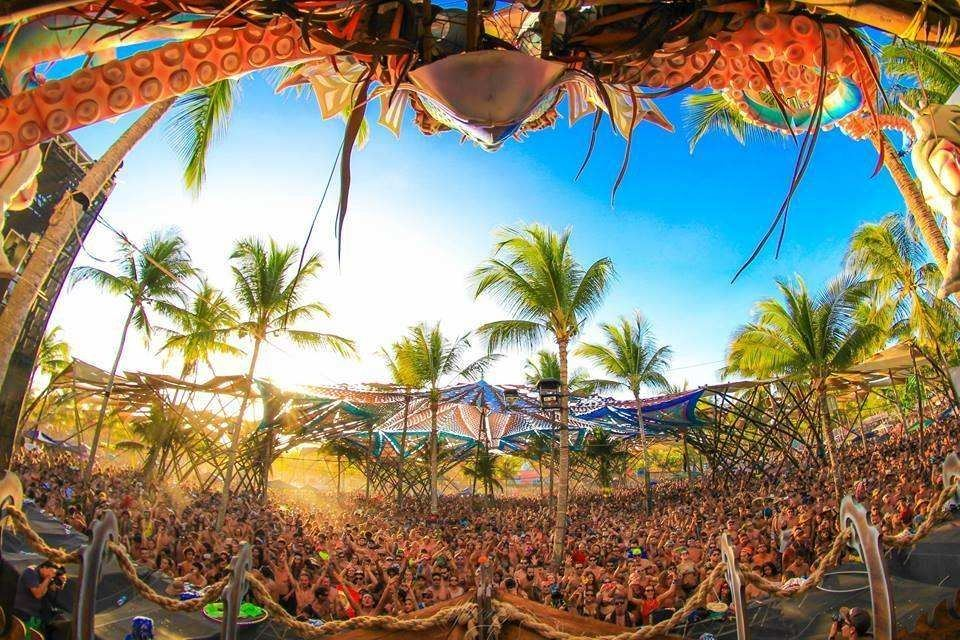

Festivals · Music
Universo Paralello 2026/27 (19th edition)
- Dates
- –
- Venue
- Praia de Pratigi
- Location
- Ituberá, Brazil
- Format
- In-person
- Category
- Music
- Industry
- Electronic music / Arts
- Organiser
- Universo Paralello
- Official website
- https://www.universoparalello.org/
About
Biennial New Year festival on the Costa do Dendê, Bahia. Brazil dates are local (Brasília time, UTC-3, unless the venue is in another Brazilian time zone, e.g. Manaus UTC-4).
Topics: psytrance, electronic, arts, sustainability.
No organiser attendance figure found on the official pages checked (23-24 Nov 2026). Ranked by an estimated size tier 'large' (about 10,000-100,000 attendees; our judgement from format, venue and scale, not an official number).
Sources
- Official — https://www.universoparalello.org/